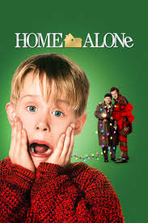

Home Alone is about an eight year old boy, named Kevin, who is left home alone at Christman when his family leaves for France for vacation, not realizing that Kevin is not on the plane with them! Two robbers attempt to rob the family home, and its up to Kevin to protect the place! When he wakes up to a completely empty house, he is leaping with joy, as it is his dream to have family at home came true. Over the course of the movie, both Harry and Marv attempt to get to Kevin and rob the house. Kevin, a very smart kid sets up traps, such as a iron that falls when theres motion. He even shoots them with a BB gun.
Overall, this movie has lots of comedy and it is great for kids and even adults. I would be cautious with showing this movie to very young kids because it has some violence and some profanity, but other than that, it is a festive movie that can be watched at any time in the year(but its best in the winter time near christmas). Eventually, while the robber duo pursues Kevin around the house, he calls the police and flees, then lures Harry and Marv into a neighboring home which they previously broke into. They ambush him and prepare to get their revenge. The police eventually arrive and arrest Harry and Marv, having identified all the houses that they broke into due to Marv's destructive characteristic of flooding them. Finally, on Christmas day, Kevin is dissapointed to find that his family is still gone. He then hears kate enter the house and call for him. His family returned.
Spoiler Alert! Hover over the space below to reveal the spoiler text!
**IMDb, The Internet Movie Database, is an online database containing information and statistics about movies, TV shows, and video games as well as actors, directors, and other film industry professionals.**